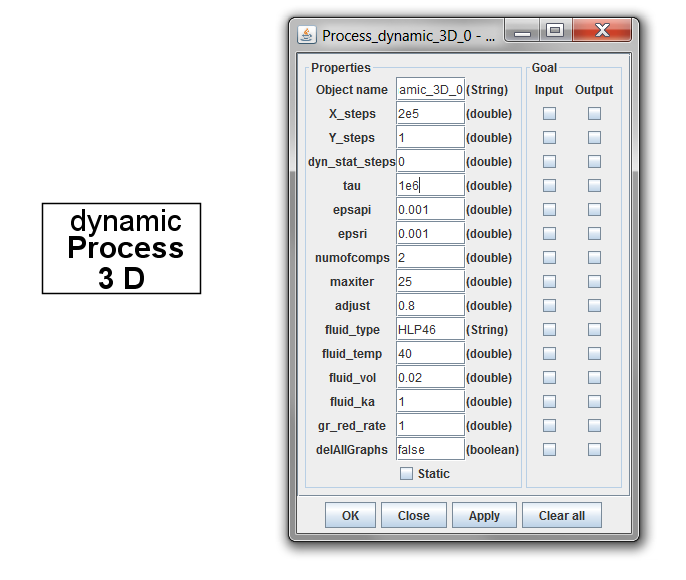

<div class="panel panel-default">
  <div class="panel-body">
 <h1>Interface elements</h1>
<p>Simulation process manager dynamic Process 3D is a simulation engine organizing the simulation process. 
Simulation process manager must be Set As <strong>Super</strong></p>

 
 
<p> Properties for simulation process manager are as follows:</p>
<ul>	<li><strong>X_steps</strong> - number of dynamic simulation time steps (x axis on the graphs)</li>
	<li><strong>Y_steps</strong> - number of two-dimensional graphs to be computed and plotted (y axis on the
 		   graphs)</li>
<li>	<strong>dyn_stat_steps</strong> - number of static simulation steps to be performed before starting dynamic
 			   simulation (in some cases helps to adjust initial values of parameters)</li>
<li>	<strong>tau</strong> - inverse value of time step length (100 … 1E7)</li>
<li>	<strong>epsapi</strong> - maximum absolute error value</li>
<li>	<strong>epsri</strong> - maximum relative error value</li>
<li>	<strong>numofcomps</strong> - number of hydraulic elements in the scheme</li>
<li>	<strong>maxiter</strong> - maximum number of iterations (1 … 1000)</li>
<li>	<strong>adjust</strong> - adjust coefficient for calculating new iteration value (0.001 … 1)</li>
<li>	<strong>fluid_type</strong> - type of the working fluid (HLP10, HLP15, HLP22, HLP32, HLP46, HLP68, 
		       HLP100)</li>
<li>	<strong>fluid_temp</strong> - temperature of the working fluid, 0C, ( -10, 0, 10, 20, 30, 40, 50, 60 )</li>
<li>	<strong>fluid_vol</strong> -  volume of air in the working fluid, (0 … 0.05)</li>
<li>	<strong>fluid_ka</strong> -  polytrope exponent of the working fluid  (1 … 1.4) </li>   
<li>	<strong>gr_red_rate</strong> - integer value n, setting that only every n-th calculated point to be plotted in output graph</li>
<li>	<strong>delAllGraphs</strong> - sets a way how plotted graphs windows most be deleted,
			true -  delete all the graphs if one graph window is deleted
			false - allow to delete one graph at once</li></ul>

  </div>
  </div>